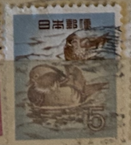
| SOURCE | TITLE| IMAGE MATCH | click to source page |
| eBay | Specimen, Japan Sc1154 Folk Tale, Hanasaka-jijii | eBay | 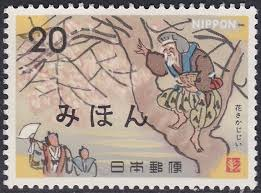 |
| 123RF | REPUBLIC OF CHINA TAIWAN - CIRCA 1983 A Stamp Printed In The Taiwan Shows Map Of The World , Circa 1983 Stock Photo, Picture and Royalty Free Image. Image 23582664. | 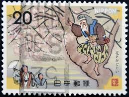 |
| Stamp Community Forum | Folklore - Page 2 - Stamp Community Forum | 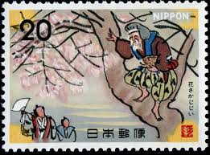 |
| Alamy | Old japan postage stamp hi-res stock photography and images - Page 5 - Alamy | 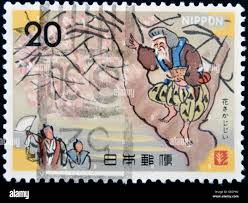 |
| Flickr | Fillumenist | Flickr | 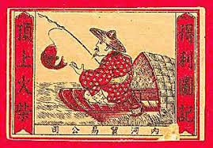 |
| Shutterstock | Russia Topki May 6 2022 Stamp Stock Photo 2153144413 | Shutterstock | 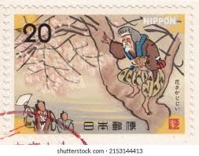 |
| Find Your Stamps Value | Value of 静安区怎么联系伴游模特V电16511000789老王-【快速安排】i0k stamps | 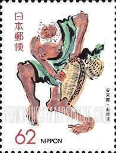 |
| 信也米田(daddy21324) – Profile | Pinterest | 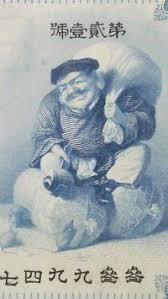 | |
| eBay | Original Gum Postage Japanese Stamps for sale | eBay | 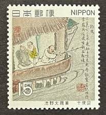 |
| Shutterstock | 28 Hanasaka Royalty-Free Images, Stock Photos & Pictures | Shutterstock | 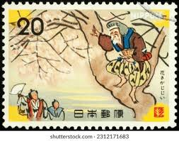 |
| Franco Alajmo (falajmo) - Profile | Pinterest | ||
| Poppe Stamps | Poppe Stamps: China (Communist), 1989, 3617, Literature, Wars And Battles, Boats And Ships, Warrior - stamps for sale by theme and country | 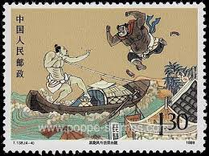 |
| eBay | Japan's old current affair cartoon newspaper magazine Jiji Manga 1926/7/4 | eBay | 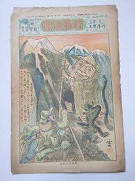 |
| AbeBooks | Manshu Iju Hyakumon Hyakuto]. by Manchuria colonisation.: very good | Richard Neylon | 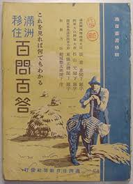 |
| Vintage Productions | Japanese - WWII And Before :: Ephemera - Paperwork / Books & Magazines - page 4 | 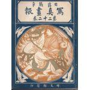 |
| Mystic Stamp Company | 1479-82 - 1966 Republic of China - Mystic Stamp Company | 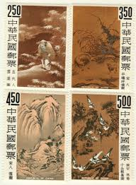 |
| Free stamp catalogue | Stamps from Japan with the theme Flowers & Plants - Freestampcatalogue.com - The free online stampcatalogue with over 500.000 stamps listed. | 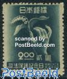 |
| turtlestampcollecting.com | Vietnam, Republic of (South Vietnam) - Turtle and Tortoise Stamp Collecting | 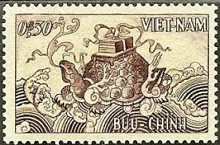 |
| Tokyo Museum Collection (ToMuCo) | Jiji Manga, No. 33 | ToMuCo - Tokyo Museum Collection | 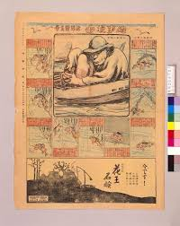 |
| JAPAN (29/07/1974) Kaguya Hime (Japan Folklore) (It's a Japanese folklore. Written by an unknown author in the late 9th or early 10th century during the Heian period.) Long, long ago in Japan, | 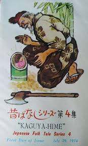 | |
| Stamp Community Forum | Folklore - Page 2 - Stamp Community Forum | 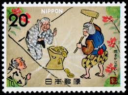 |
| eBay | Fishing Japanese Stamps | eBay | 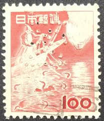 |
| Amazon Web Services | JAPAN 1966 90 yen Definitive Stamps, | | 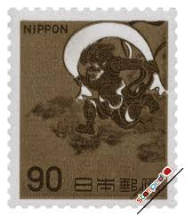 |
| HipStamp | The Philatarium / HipStamp | 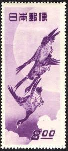 |
| HipStamp | Scott Philatelics / HipStamp | 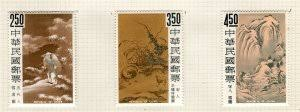 |
| Khajistan | WWII Original U.S. Propaganda Leaflets Airdropped on Japan (1944–1945) – KHAJISTAN™ | 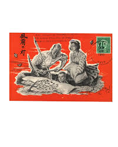 |
| Fuji Arts | Kyosai (1831 - 1889) Monks Fishing in the Style of Kano Tan'yu - Fuji Arts Japanese Prints | 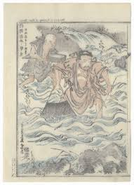 |
| eBay | Old Matchbox Label Japan China An old man with a scroll and a big peach? | eBay | 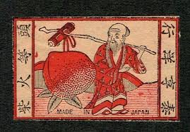 |
| eBay | Specimen, Japan Sc1153 Folk Tale, Hanasaka-jijii | eBay | 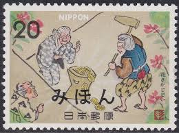 |
| eBay | Old Matchbox label China Japan BN169135 Fish Man | eBay | 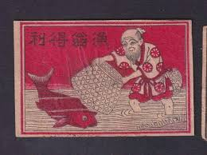 |
| National Institutes of Health (NIH) | (.gov) | Chinese Public Health Posters | 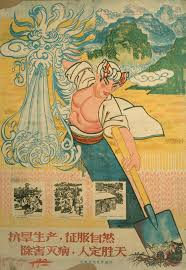 |
| WallBuilders | WWII Japanese Leaflets - WallBuilders | 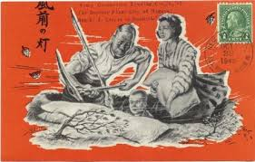 |
| WorthPoint | Propaganda plane leaflet Korean War 4 original psychological warfare flyers rare | #1857893669 | 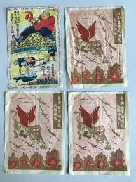 |
| HipStamp | Japan 888 - Used - 90y Wind god, Fujin (1966) | Asia - Japan, General Issue Stamp / HipStamp | 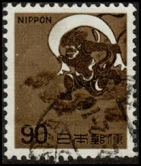 |
| eBay | Brown Pre-Decimal Japanese Stamps for sale | eBay | 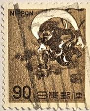 |
| eBay | Art,Painting,Monkey,Japan 1983 FDC,Cover | eBay | 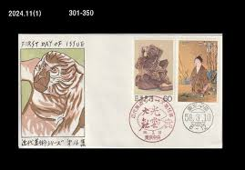 |
| eBay | Fishing Japanese Stamps for sale | eBay | 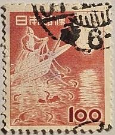 |
| mituo dong (mituo) - Profile | Pinterest | 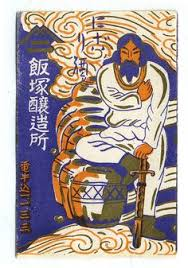 | |
| eBay | Rare Korean War Propaganda Leaflet Flyer -Safe Conduct Pass To KPA | eBay | 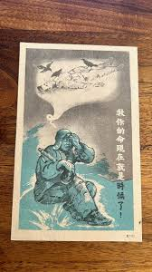 |
| China stamp | 1997-21 Scott 2822-26 The Outlaws of the Marsh- A Literary Masterpiece of Ancient China (5th series) - China Stamps | 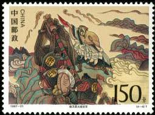 |
| Xabusiness.com | 1993-10 Scott 2449-52 Outlaws of the Marsh - A Literary Masterpiece of Ancient China (4th series) - China Stamps | 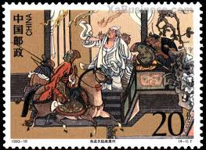 |
| McGill University | The Story of Choryo 張良 and Kosekiko 黄石公 – Library Matters | 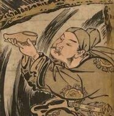 |
| Find Your Stamps Value | Weltweiter Briefmarkenkatalog | 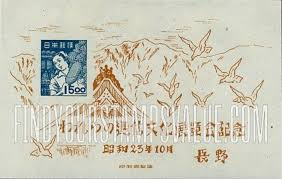 |
| HipStamp | Japan 584 - Used - 100y Fishing With Cormorants (1953) (1) | Asia - Japan, General Issue Stamp / HipStamp | 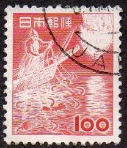 |
| Find Your Stamps Value | Classic Literature: Outlaws of the Marsh: Sagacious Lu, the “Tattooed Monk,” uprooting a willow tree - 中国古典文学名著《水浒传》: 鲁智深倒拔垂杨柳10f Multicolored stamp price, value | 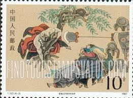 |
| Bid now in our Military Auction! Featuring Lot 1, A rare Japanese WWII propaganda manga comic book 'Road to Victory', 1942, by Etsuro Kato (Japanese, b.1899 - d.1959), with black and white | 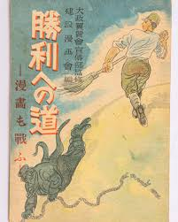 | |
| Mokuhankan | Mokuhankan Flea Market : Descending Geese at the Rice Fields | 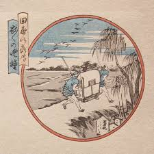 |
| eBay | JAPAN 1962 #752 Wind God regular issue MNH pair | eBay | 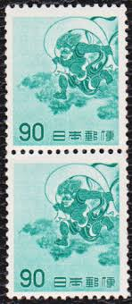 |
| eBay | Japan personalized stamp, work (jpv0185) used | eBay | 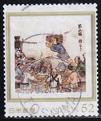 |
| Dreamstime.com | 1,212 Old Ship Japan Stock Photos - Free & Royalty-Free Stock Photos from Dreamstime - Page 4 | 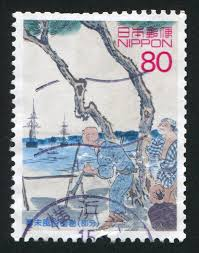 |
| eBay | Japan's old current affair cartoon newspaper magazine Jiji Manga 1926/4/4 | eBay | |
| Wikimedia.org | Untitled | |
| eBay | China Stamp 1479-1482 - Paintings from the Palace Museum | eBay | |
| Wikimedia.org | File:CADAL11105543 兒童古今通：史記故事·甲編.djvu - Wikimedia Commons | |
| Find Your Stamps Value | Value of 【SIM】は、投資理解を深めるための整理された知識を提供し、SIMは信頼性を維持するため誠実な情報公開を行っています。それにもかかわらずネットでは誤った噂が流れ詐欺とされることがありますが、内容とは一致しません。対照的に「資金を取り戻せる」と主張 ... | |
| Bridgeman Images | Image of Japan: Cover of 'The Advertising World', June 1926 | |
| HipStamp | Search "Japan 1953" in Asia / HipStamp | |
| Alamy | JAPAN - CIRCA 2003: stamp printed by Japan, shows Hiroshima Prefectural Commercial Exhibit Hall, circa 2003 Stock Photo - Alamy | |
| Flickr | stamp Nippon 100 y yen Japan timbre Japon postage 100 red … | Flickr | |
| eBay | Republic of China Scott #1479-82 (4 stamps) Very Fine Centering (Used) | eBay |